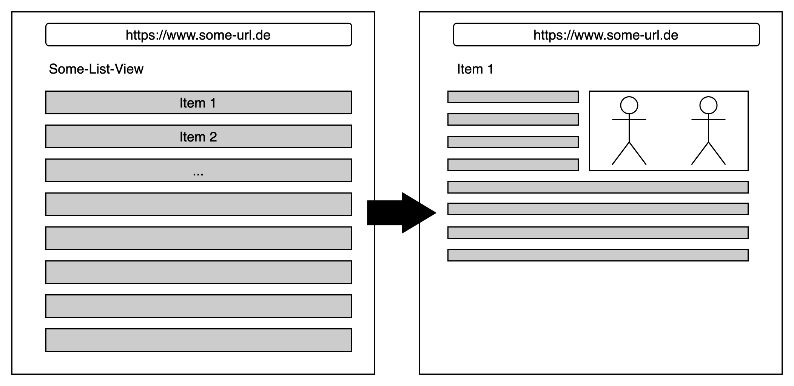

Routing?
- Ist theoretisch nicht notwendig
- Anwendung macht einfach ein rerender

Also kein Routing?
- URL bleibt über die Laufzeit gleich
- Teilen eines Links einer bestimmten Ressource?

Routing
- Wir brauchen Routing in SPA's doch!
- Es passiert ein pseudo Routing
- SPA Frameworks liefern Routing mit oder es gibt Libraries
- Dazu später mehr ...